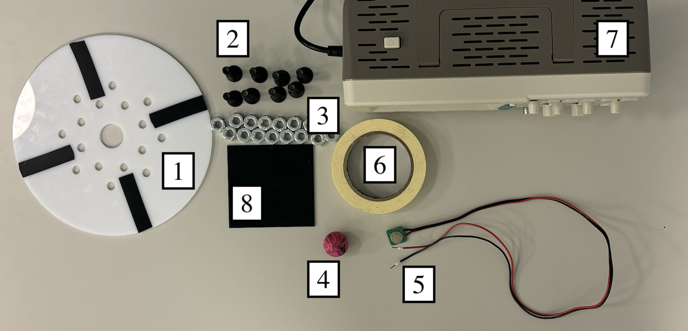
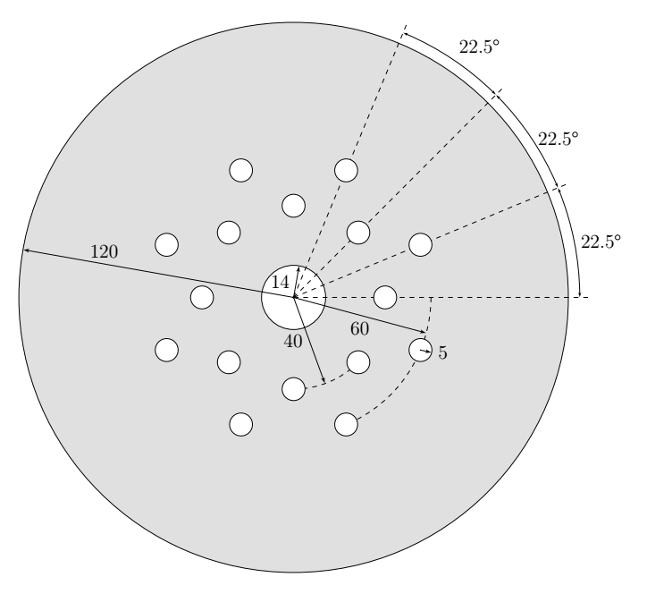
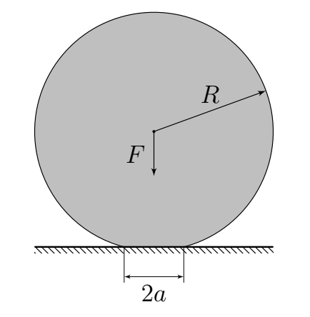
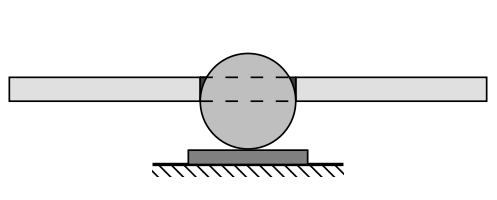
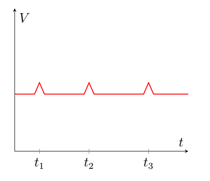
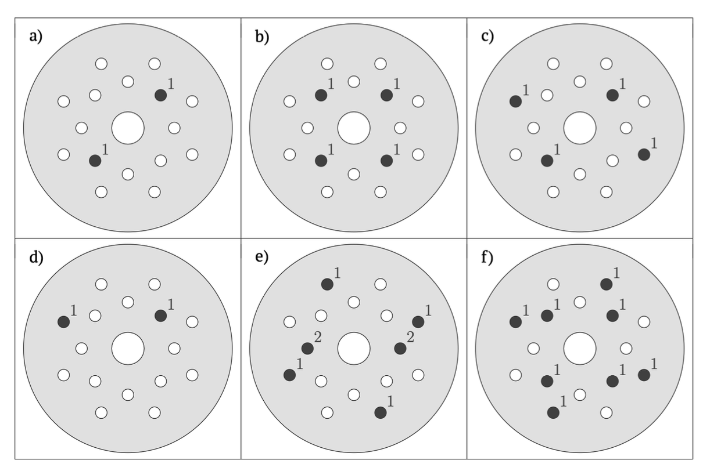

X25 (2025) — English translation
This problem is devoted to the physics of dry friction that occurs at the point of contact between an elastic ball and a surface. We will study how the angular velocity of rotation of a ball lying on a surface decreases over time. Angular velocity measurements will be taken optically using a large round ball cap with 4 black stripes. The mass of the load will change with the help of weights screwed into the nozzle. Gravity acceleration $g=9.81~\text{м}/\text{с}^2$. Attention! This problem does not require error estimation.
Gravity acceleration $g=9.81~\text{м}/\text{с}^2$.
Attention! This problem does not require error estimation.

Equipment: Round nozzle with holes 8 M10 bolts 16 M10 nuts Polybutadiene rubber ball Photodiode Masking tape Oscilloscope Rotation stand
Nozzle drawing. Dimensions are indicated in millimeters. The hole for the ball in the center is specially made so that its size is slightly smaller than the ball.

The masses of the installation elements are presented in the table below. Object $m,г$ Ball 18.9 Nozzle 200.3 Bolt M10 24.0 Nut M10 10.0
The masses of the installation elements are presented in the table below.
Elastic forces arising at the point of contact of two spherical bodies were first considered by Hertz in 1882, and the theory he constructed perfectly describes many contact phenomena. Let us consider a homogeneous elastic ball of radius $R$, which is weakly pressed into an absolutely solid surface by a force $F$ (its Young’s modulus $E\to \infty$).

The elastic properties of the ball are fully characterized by Young's modulus $E$ and Poisson's ratio $\nu$. Under these conditions, at the point of contact, the surface of the ball ceases to be spherical and becomes a flat circle of radius $a \ll R$. The above quantities are related to each other by the Hertz equation: \[F = \frac{4}{3} \frac{E}{1-\nu^2} \frac{a^3}{R}\]
The pressure on the surface from the side of the ball at the points of contact is proportional to the movement of these points associated with deformation, therefore \[p(r) = p_0 \sqrt{ 1 - \frac{r^2}{a^2} },\]where $r$ is the distance to the center of the circle of contact.
Let the coefficient of dry friction between the surface and the ball be equal to $\mu$ and the ball rotates around a vertical axis.
Note: If you are unable to find the explicit form $J(x)$, then you can use $J(1)=\pi/16$.
Strips of black electrical tape transmit light much weaker than a round plastic nozzle. Therefore, if you place a photodiode under the rotating nozzle, the voltage on it will drop every time the photodiode is under the black strip. Launch the ball with the nozzle so that it is always on the spinning stand. You can glue the spinning stand to the table (the ball should not spin on the tape!). Most of the ball should be at the bottom. For measurements, it is convenient to use the Run/Stop button on the oscilloscope. When you press Run/Stop once, the oscilloscope finishes measurements (and saves them) when the signal reaches the end of the screen; when you press Run/Stop twice, it finishes measurements right now (and also saves them). After securing the ball in the hole of the nozzle, do not pull it out again so that the point around which the rotation occurs does not change.

Using your hand, start the rotation of the ball with the nozzle around its axis. The reverse voltage across the photodiode will drop every time there is a black cap strip above it.
A characteristic form of the dependence of the voltage on the photodiode on time

By screwing nuts and bolts onto the nozzle, you can change the mass of the system. The table below suggests different combinations of nuts and bolts. In the pictures, the hole containing the bolt and $n$ of the nuts screwed onto it is shaded, and $n$ is indicated next to it.

Note: measurements are completely similar to part B1, i.e. an attachment without bolts and nuts does NOT count as a combination. Combinations that do not differ in terms of dynamics are considered one.
The ball given to you is made of polybutadiene rubber, which has a Poisson's ratio of $\nu=0.50$. The coefficient of friction of polybutadiene rubber with the surface for rotation is $\mu = 0.90$.
Source: https://pho.rs/p/4190